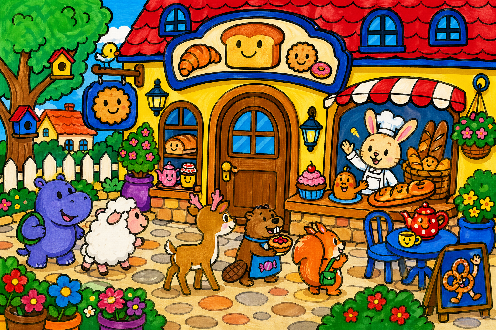

Lieu gourmand
La boulangerie de Fifi
La boulangerie de Fifi rassemble la vitrine, le salon de thé, le petit jardin et l'atelier où le grand four à pain chauffe les fournées.
On y croise
Fifi, Pinouille, Galipo, Gros Bidouille, Tipidou et les gourmands de passage.